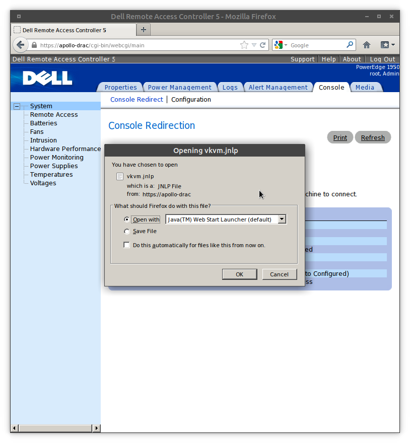
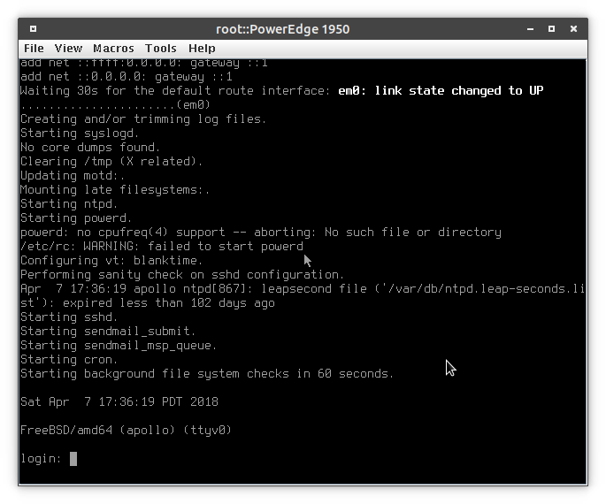
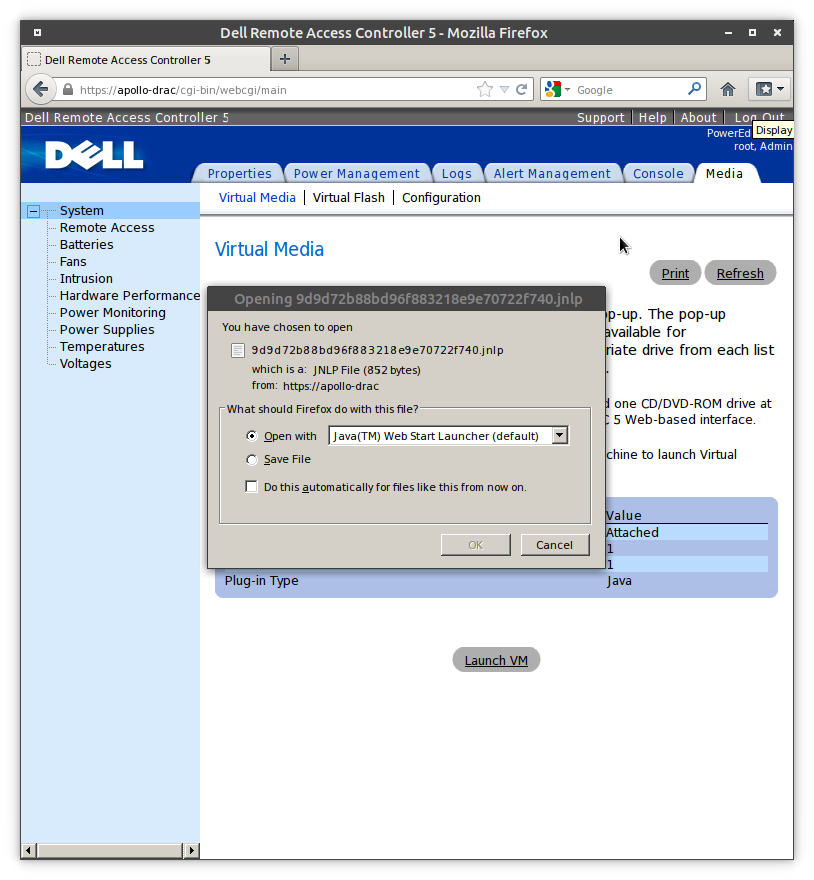
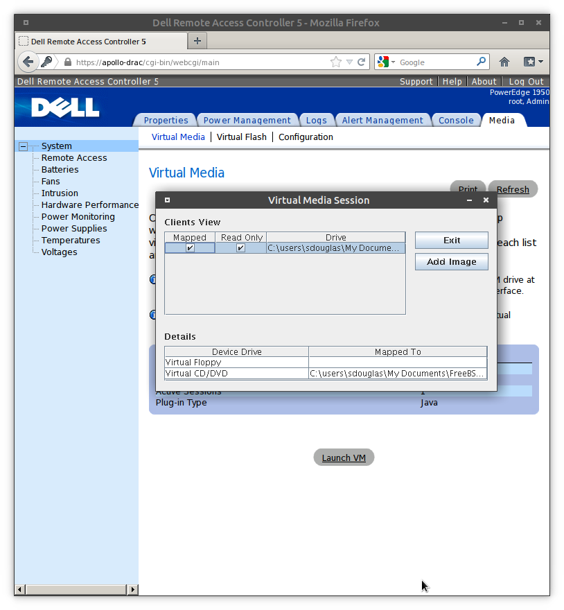

Connecting to a drac 5 from modern linux
The problem
In recent years, it has been increasingly difficult to administer older dell servers from Linux. icedtea-web works great for idrac6+, but 5- still requires either activex or an older version of java. Especially to get the virtual media working.
My solution
Wine allows you to run Windows binaries on Linux. It provides a virtual 'C:/' drive, and uses a syscall translation layer to run the binary a near native speed. Projects like PlayOnLinux use Wine to offer OOTB solutions for popular Windows programs on Linux. Wine is surprisingly easy to use. It is available in most package repositories, but I prefer to get it right from them.
Installation on a debian/ubuntu system is easy. If you have added the new repo or want to pull from the repos of your distribution, the commands are the same:
# sudo apt install wine-stable
Next, you need to decide the software you want to install in wine. It is worth noting that by default Wine will setup your drive_c and libraries in ~/.wine. This can be controlled by the WINEPREFIX environment variable, to change the location. I have decided that I want to install Firefox 15.01 (Random guess) and the last Java 6.
- Firefox 15.01
- Java 6u45 (jdk-6u45-windows-i586.exe). Unfortunately, you need an Oracle account to get at this archive and agree to the terms of use, but you do not need to pay for anything. I happened to have an oracle account from filing a MySQL bug.
Now, just run each EXE and go through the install process as you would with any other windows program:
# wine ~/Downloads/Firefox\ Setup\ 15.0.1.exe # wine ~/Downloads/jre-6u45-windows-i586.exe
After this you will be greeted by the respective installers. Install them as you normally would. Wine put a desktop icon for Firefox on my linux desktop. I used that to start up my Wine powered Firefox. You could also start firefox like this:
# wine ~/.wine/drive_c/Program\ Files\ \(x86\)/Mozilla\ Firefox/firefox.exe
Navigate to your drac address. Success! You can now use virtual console and virtual media!
 Keep in mind that if you want to attach an ISO it needs to exist within ~/.wine/drive_c so that windows can see it. You can either download the iso using the wine firefox (bad idea to browse non trusted websites with such an out of date browser, though), or just copy it in:
# cp Downloads/FreeBSD-11.1-RELEASE-amd64-disk1.iso ~/.wine/drive_c/users/sdouglas/
